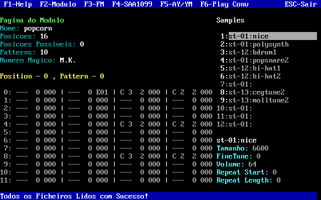
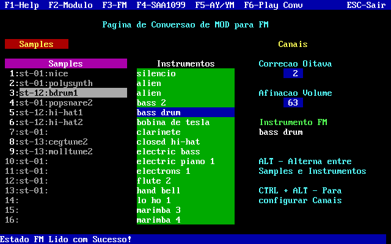
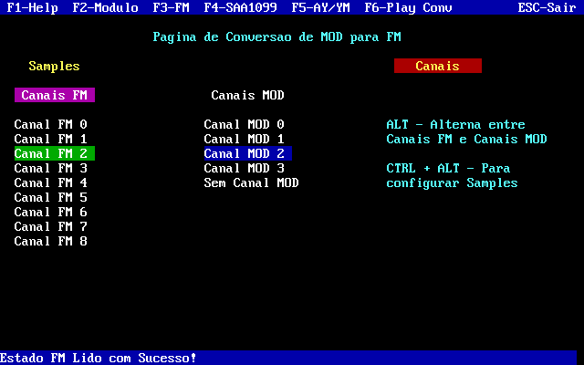
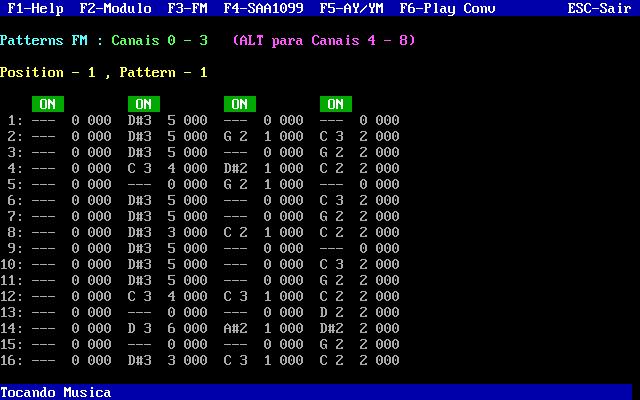
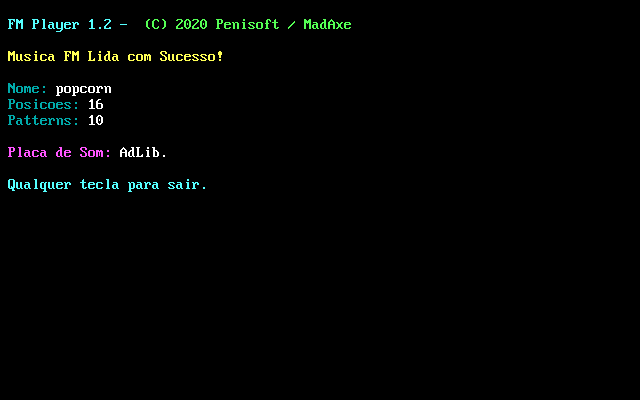
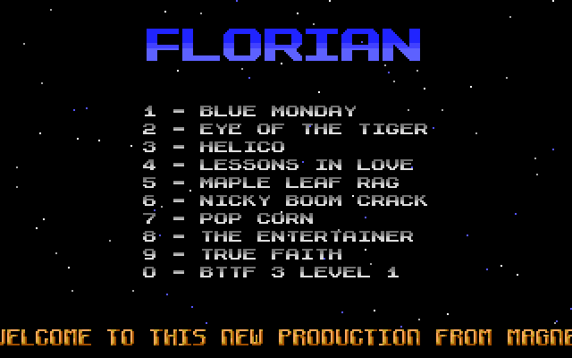

ModConv 1.7
Benvindos ao ModConv 1.7. O programa que converte ficheiros .MOD para FM OPL2, AY-3-8912 e Philips SAA1009.
Downloads:
ModConv 1.7
- Inclui o programa, exemplos e manuais
Músicas AY
- Pack de Músicas AY-3-8912
Músicas FM
- Pack de Músicas FM
Músicas SAA1009
- Pack de Músicas Philips SAA1009
Músicas YM2149F
- Pack de Músicas YM2149F
As sources podem ser descarregadas aqui:
Github
Carrega o teu .MOD favorito
Seleciona os melhores Instrumentos


Arranja os Canais à tua preferência
Converte a Música para o Formato desejado


Ouve a Música convertida no Player
Ou utiliza a Música nas tuas Próprias Produções


Última Atualização em 23 Junho 2024